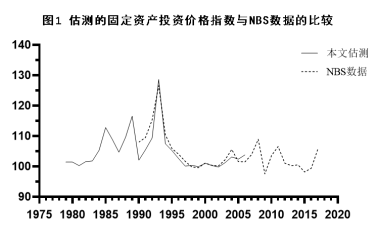
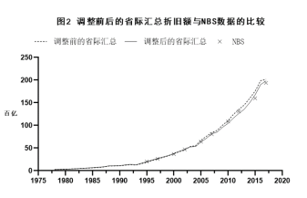
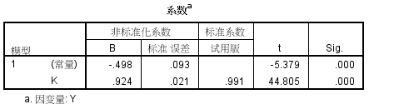
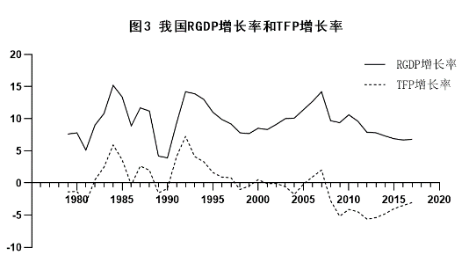

中国经济增长率的分解（1979-2017）
一、模型和公式
柯布-道德拉斯生产函数的变形
两侧取自然对数，
继而，
（1）
这一变形将方便后面进行OLS回归。
增长率的分解

其中，Y表示产出，ΔY表示产出增量，ΔY/Y表示产出增长率，K表示资本，ΔK表示资本增量，ΔK/K表示资本增长率，L表示劳动力，ΔL表示劳动力增量，ΔL/L表示劳动力增长率，α和（1-α）分别表示资本增长率和劳动力增长率对产出增长率的影响程度，ΔA/A表示除资本和劳动投入之外其他因素对产出增长率的影响，即全要素生产率（TFP）。
资本积累
其中，和分别表示第t期和第t+1期的资本存量，表示折旧率，表示第t期的资本折旧，表示第t期的投资。
对经济增长率进行分解，实际上就是根据产出、资本和劳动力数据，利用统计回归的方法拟合出值，进而根据产出增长率、资本增长率和劳动力增长率数据，得到TFP增长率。
二、数据来源和处理
资本K及资本增量ΔK
基期资本存量
在国内当前的研究中，不同学者就我国资本存量尚未形成统一的观点，造成观点差异的重要原因之一就是对基期资本存量的不同判断。基期资本存量牵涉较深，本文不予自行估测，在比较不同学者的现有成果后，采用张军（2003）的计算结果，将中国1978年资本存量定为8663.6亿元（1978年价格）。
资本增量
目前国内公布的资本增量数据有资本形成总额（Gross capital formation）、固定资本形成总额（Gross fixed capital formation）和全社会固定资产投资（Investment in fixed assets）三种。
资本形成总额包括固定资本形成总额与存货两部分。目前大部分对资本存量的测算研究中都并未采用资本形成总额作为资本增量数据，一方面是由于部分学者对存货可能是人为制造的平衡账户工具，并且可能夸大资本存量的质疑，另一方面也是由于有更合理的数据可供选择。因此本文将不采用这一数据。
全社会固定资产投资每月更新，且包括按构成、行业等标准分类的数据，数据较为丰富。但其问题在于包括房地产投资、旧机器设备和旧厂房建筑的转让支出，并且仅统计一定规模以上的投资。房地产投资的很大部分是居民进行的非生产性用途的投资，而旧机器设备和旧厂房建筑的转让支出是否会造成重复计算仍存在不同观点。此外，更为棘手的是统计口径和方法的变化造成的数据可比性问题。1997年和2011年两次提高除房地产投资、农村集体/个人投资外固定资产投资的统计起点，但仅仅调整了1996年和2010年数据，其余年份仍然存在统计口径不一的问题，2004年经济普查造成了当年的全社会固定资产投资额与之前年份存在不可比因素。因此，本文也不采用这一数据。
固定资本形成总额剔除了房地产投资、旧机器设备和旧厂房建筑的转让支出，包含了小规模投资数据，且并未受到统计方法变更的影响，因此在数据合理性和可比性上要优于全社会固定资产投资。但其缺陷在于并未包括按构成分的固定资本形成数据，而固定资产投资价格指数的构建恰恰依赖于这一数据，如果采用固定资本形成总额作为投资增量的指标，需要解决其与固定资产投资价格指数的适配问题。
综合考虑下，本文将在固定资本形成总额具有与全社会固定资产投资相同构成的假设下，采用固定资本形成总额作为投资增量的指标。固定资本形成总额数据来自于NBS数据库，见表2。
固定资产投资价格指数
NBS所提供的固定资本形成总额数据并未剔除价格因素，无法直接作为不变价格下资本存量的增量。自1990年起，NBS开始公布固定资产投资价格指数（PII），本文中1990-2017年所使用的固定资产投资价格指数序列也来自于此。但是1990年以前的价格指数仍然存在空白。参考白重恩（2003）和古明明（2012）的思路，从全社会固定资产投资的构成出发，构建固定资产投资价格指数，事实上这也是众多学者所采用的方法中最符合NBS统计制度的思路。
具体而言，固定资产投资主要由建筑安装工程投资和设备工器具购置投资两部分构成，建筑安装工程投资主要包括建材成本、工人工资、器械使用费用和其他费用等。考虑数据可得性，仅选取建筑材料工业工业品出厂价格指数与建筑业职工平均实际工资指数进行加权平均得到建筑安装工程投资价格指数的近似值，并使用机械工业工业品出厂价格指数作为设备工器具购置投资价格指数的近似值，最后将建筑安装工程投资和设备工器具购置投资价格指数进行加权平均，得到固定资产投资价格指数的近似值。
建筑材料工业、机械工业工业品出厂价格指数与建筑业职工平均工资数据来自1999-2007年统计年鉴，其1978年的两种价格指数缺失。将以当年价格表示的平均（名义）工资数据根据对应年份CPI换算成平均实际工资，进而得到平均实际工资指数。第一次加权平均中建筑材料价格指数和实际工资指数的权重分别选定为0.7和0.3，这参考了中铁二局、安徽水利等上市公司年报的成本分析表中材料费和直接人工费占总成本的比重。第二次加权平均中，建筑安装工程价格指数和设备工器具购置价格指数的权重根据前三年建筑安装工程投资额和设备工器具投资额占全社会固定资产投资额的比重确定。
为了验证1978-1989年固定资产投资价格指数的构建是否合理，表1中同样列出了按照这种方法估算的1990-2006年的价格指数，以与NBS公布的价格指数形成对照。由图1可知，估算的价格指数与NBS公布的价格指数在重合年份趋势一致，数值相差较小，构建方法当较合理。1985年和1989年两次较明显的峰值应该并非是估算错误，而恰恰是这两个年份经济过热、通货膨胀在固定资产投资价格上的反映。

折旧额
由于我国相关数据缺失严重，折旧的计算十分困难。当前学者的研究中大多数都先行假定了一个“适当的”折旧率，而后推导出折旧额序列。对资本存量的估测之所以众说纷纭，一个重要的原因就是这种的假定缺乏标准和事实根据。本文将从省际数据出发，绕开对折旧率的假设来求得资本存量序列。
除重庆缺失1993-1995年和西藏缺失1993年数据外，各省自1993-2017年折旧额数据可从NBS数据库得到。通过计算出1996年重庆以外各省折旧额增长率，并根据各省折旧额占各省汇总（重庆除外）折旧额的比重进行加权平均得到全国平均折旧额增长率作为重庆1996年折旧额增长率，倒推出重庆1995年折旧额数据。以此类推，补全重庆1994年、1993年和西藏1993年数据。
根据当前查询结果，1993年以前的折旧额数据仅有北京、上海、广东、福建四省在其统计年鉴上公布。假设资本损耗和资本产出成比例，将四省汇总折旧额根据四省汇总GDP与全国GDP的比例关系进行换算，得到1978-1992年全国折旧额的近似值。
最后，参考古明明（2012）的做法，将各省汇总折旧额根据各省汇总GDP与全国GDP的比例关系进行调整，将调整后的各省汇总折旧额作为折旧额的指标（见表2）。各省GDP和全国GDP数据均可从NBS数据库得到。
由省际折旧额汇总得到全国折旧额近似值的方法，其优点在于避免了不准确的折旧率假设带来的误差，其缺点在于将省际汇总数据作为全国数据不符合我国国民经济核算的制度。图2显示了调整后的省际汇总折旧额与NBS有数据公布的年份的对比，可以看到，二者十分接近，这说明由省际折旧额推算全国折旧额的思路是可行的，对省际汇总折旧额的调整也是富有成效的。

产出和劳动力
以我国实际GDP数据作为产出的指标，根据NBS提供的1978年GDP数据和国内生产总值指数（上年=100）序列，易得我国实际GDP（见表3）和实际GDP增长率（见表4）序列。
由1979-2007年就业人口序列（见表3）易得各年就业人口增长率作为劳动力增长率的代表指标（见表4），就业人口序列来源于NBS数据库。
三、OLS回归
在取得了产出、资本和劳动力的数据后，使用SPSS对（1）式进行OLS回归，得到系数为0.924（p<0.01），为4.946(p<0.01)，结果呈现显著相关，故采用。

因此我国1979-2012年经济增长率分解的拟合方程为：
将产出增长率、资本增长率和劳动力增长率带入即可得到我国1979-2017年的TFP序列（见表4）。纵观这39年的数据，TFP增长率平均值为-0.36%，有16个年份为正增长，23年为负增长，极大值为5.9%（1984年），自2008-2017年，增长率持续为负，如按此理解，我国尚未摆脱严重依赖资本投入实现经济增长的发展阶段，技术进步对经济增长的贡献较小的情况并未得以改观。图3表现了我国实际GDP增长率与TFP增长率的密切联系。

四、反思
本文可能高估了资本投入对经济增长的影响，从而相对地压低了劳动力投入和TFP对经济增长的影响。回归结果显示资本增长率对经济增长率的影响程度（系数为0.924）远远高于劳动力增长率（系数为0.076），与我国长期的人口红利对经济增长起到重要推动作用的经验事实似乎相背离。我国强调实施产业转型已近10年，高科技产业的发展较为迅猛，但这在本文测算的2008-2017阶段TFP增长率中并未得以体现。
参考文献：
[1]沈利生,乔红芳.重估中国的资本存量:1952—2012[J].吉林大学社会科学学报,2015,
55(04):122-133+252.
[2]魏宏耀.运用索洛残差法估算中国的全要素生产率[J].发展,2013(03):84+117.
[3]古明明,张勇.中国资本存量的再估算和分解[J].经济理论与经济管理,2012(12):29-41.
[4]徐大丰.资本产出比的省际差异和资本回报[J].经济论坛,2007(02):6-8.
[5]李晓超,严建辉总编，新中国六十年统计资料汇编,中国统计出版社,2010年版.
[6]The Return to Capital in China[J].Chong-En.Bai,Chang-Tai.Hsieh,Yingyi Qian.Brookings Papers on Economic Activity . 2006 (2)
[7]周亚,朱章海主编，上海统计年鉴，中国统计出版社，2018年版.
[8]庞江倩总编,数说北京:改革开放四十年,中国统计出版社,1978-2018,年鉴.
[9]杨洪春总编,福建统计年鉴,中国统计出版社,2015,568,年鉴.
[10]广东省统计局主编，广东统计年鉴,中国统计出版社,2018,6-7,年鉴.